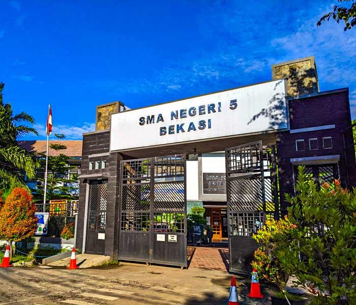

SEJARAH SEKOLAH
SMAN 1 >> SMAN 5
Pendirian SMAN 1 Pondok Gede didasari oleh data Dapodik dengan tanggal SK Pendirian pada 6 September 1990, dengan Nomor SK 111/A5.2/E/1990, serta SK Operasional 0389/0/1990. Pada tanggal 20 September 1990, Pemerintah Daerah DKI Jakarta dan Pemerintah Daerah Bekasi melakukan peresmian simbolis Unit Gedung Baru SMA se-Jawa Barat. Kemudian, pada tahun 1999, seiring dengan perubahan status pemerintahan daerah dan pemekaran wilayah Kabupaten Bekasi menjadi Kota dan Kabupaten Bekasi, SMAN 1 Pondok Gede berubah status menjadi SMA Negeri 5 Kota Bekasi.